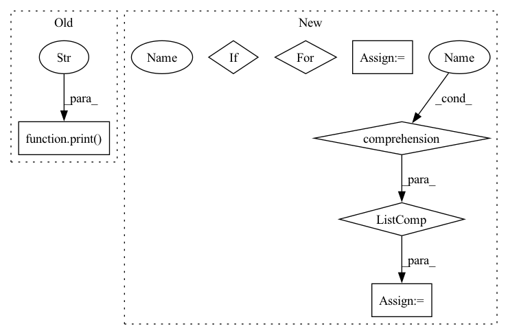

Pattern ID :24399
Before Change
dataset_module = dataset_module_factory(
path, download_config=download_config, force_local_path=local_path, **download_kwargs
)
print(
f"The processing script for dataset {path} can be inspected at {local_path}. "
f"The main class is in {dataset_module.module_path}. "
f"You can modify this processing script and use it with `datasets.load_dataset({local_path})`."
)
def inspect_metric(path: str, local_path: str, download_config: Optional[DownloadConfig] = None, **download_kwargs):
rAfter Change
module_source_path = inspect.getsourcefile(builder_cls)
module_source_dirpath = os.path.dirname(module_source_path)
for dirpath, dirnames, filenames in os.walk(module_source_dirpath):
dst_dirpath = os.path.join(local_path, os.path.relpath(dirpath, module_source_dirpath))
os.makedirs(dst_dirpath, exist_ok=True)
// skipping hidden directories; prune the search
// [:] for the in-place list modification required by os.walk
dirnames[:] = [dirname for dirname in dirnames if not dirname.startswith((".", "__"))]
for filename in filenames:
shutil.copy2(os.path.join(dirpath, filename), os.path.join(dst_dirpath, filename))
shutil.copystat(dirpath, dst_dirpath)
local_path = relative_to_absolute_path(local_path)
print(In pattern: SUPERPATTERN
Frequency: 3
Non-data size: 7
Instances Fragment ID: 75726147
Project Name: huggingface/datasets
Commit Name: 8239e7968ddcaaf6a9eff9297a5431478c1e0242
Time: 2022-06-09
Author: mariosasko777@gmail.com
File Name: src/datasets/inspect.py
M Class Name: AnonimousClass
N Class Name: AnonimousClass
M Method Name: inspect_dataset(3)
N Method Name: inspect_dataset(3)
M Parent Class:
N Parent Class:
M File Name: src/datasets/inspect.py
N File Name: src/datasets/inspect.py
M Start Line: 124
M End Line: 128
N Start Line: 126
N End Line: 144
Before Change
metric_module = metric_module_factory(
path, download_config=download_config, force_local_path=local_path, **download_kwargs
)
print(
f"The processing scripts for metric {path} can be inspected at {local_path}. "
f"The main class is in {metric_module.module_path}. "
f"You can modify this processing scripts and use it with `datasets.load_metric({local_path})`."
)
def get_dataset_infos(
path: str,After Change
builder_cls = import_main_class(metric_module.module_path, dataset=False)
module_source_path = inspect.getsourcefile(builder_cls)
module_source_dirpath = os.path.dirname(module_source_path)
for dirpath, dirnames, filenames in os.walk(module_source_dirpath):
dst_dirpath = os.path.join(local_path, os.path.relpath(dirpath, module_source_dirpath))
os.makedirs(dst_dirpath, exist_ok=True)
// skipping hidden directories; prune the search
dirnames[:] = [dirname for dirname in dirnames if not dirname.startswith((".", "__"))]
for filename in filenames:
shutil.copy2(os.path.join(dirpath, filename), os.path.join(dst_dirpath, filename))
shutil.copystat(dirpath, dst_dirpath)
local_path = relative_to_absolute_path(local_path)
print( Fragment ID: 75726145
Project Name: huggingface/datasets
Commit Name: 8239e7968ddcaaf6a9eff9297a5431478c1e0242
Time: 2022-06-09
Author: mariosasko777@gmail.com
File Name: src/datasets/inspect.py
M Class Name: AnonimousClass
N Class Name: AnonimousClass
M Method Name: inspect_metric(3)
N Method Name: inspect_metric(3)
M Parent Class:
N Parent Class:
M File Name: src/datasets/inspect.py
N File Name: src/datasets/inspect.py
M Start Line: 149
M End Line: 153
N Start Line: 162
N End Line: 179
Before Change
else: scheduler = None
// Train
print("Begin training." )
for e in range(1, args.epochs + 1):
train_loss, train_acc = train(model, criterion, optimizer, train_loader, scheduler=scheduler, accumulation=args.accumulation, device=device)
valid_loss, valid_acc = evaluate(model, criterion, valid_loader, device=device)
After Change
// Run finetuning
// Use hyperparameter search
if args.optimize_hyperparameters :
import optuna
study = optuna.create_study(direction="maximize")
study.optimize(objective, n_trials=args.opt_n_trials)
pruned_trials = [t for t in study.trials if t.state == optuna.trial.TrialState.PRUNED]
complete_trials = [t for t in study.trials if t.state == optuna.trial.TrialState.COMPLETE]
print("Study statistics: ")
print(" Number of finished trials: ", len(study.trials))
print(" Number of pruned trials: ", len(pruned_trials))
print(" Number of complete trials: ", len(complete_trials))
print("Best trial:")
trial = study.best_trial
print(" Validation Accuracy : {:.4f}".format(trial.value))
print(" Params: ")
for key, value in trial.params.items():
print(" {}: {}".format(key, value))
// Run standard finetuning without hyperparameter search
else:
_ = objective(None)
def main():
parser = argparse.ArgumentParser() Fragment ID: 75726151
Project Name: jcblaisecruz02/filipino-text-benchmarks
Commit Name: 15609e90770528e9ab579af62caf962d30560f76
Time: 2020-06-06
Author: jan_christian_cruz@dlsu.edu.ph
File Name: train.py
M Class Name: AnonimousClass
N Class Name: AnonimousClass
M Method Name: finetune(1)
N Method Name: finetune(1)
M Parent Class:
N Parent Class:
M File Name: train.py
N File Name: train.py
M Start Line: 55
M End Line: 115
N Start Line: 143
N End Line: 166
Before Change
dataset_module = dataset_module_factory(
path, download_config=download_config, force_local_path=local_path, **download_kwargs
)
print(
f"The processing script for dataset {path} can be inspected at {local_path}. "
f"The main class is in {dataset_module.module_path}. "
f"You can modify this processing script and use it with `datasets.load_dataset({local_path})`."
)
def inspect_metric(path: str, local_path: str, download_config: Optional[DownloadConfig] = None, **download_kwargs):
rAfter Change
builder_cls = import_main_class(dataset_module.module_path, dataset=True)
module_source_path = inspect.getsourcefile(builder_cls)
module_source_dirpath = os.path.dirname(module_source_path)
for dirpath, dirnames, filenames in os.walk(module_source_dirpath):
dst_dirpath = os.path.join(local_path, os.path.relpath(dirpath, module_source_dirpath))
os.makedirs(dst_dirpath, exist_ok=True)
// skipping hidden directories; prune the search
// [:] for the in-place list modification required by os.walk
dirnames[:] = [dirname for dirname in dirnames if not dirname.startswith((".", "__"))]
for filename in filenames:
shutil.copy2(os.path.join(dirpath, filename), os.path.join(dst_dirpath, filename))
shutil.copystat(dirpath, dst_dirpath)
local_path = relative_to_absolute_path(local_path)
print( Fragment ID: 75726167
Project Name: huggingface/datasets
Commit Name: 8239e7968ddcaaf6a9eff9297a5431478c1e0242
Time: 2022-06-09
Author: mariosasko777@gmail.com
File Name: src/datasets/inspect.py
M Class Name: AnonimousClass
N Class Name: AnonimousClass
M Method Name: inspect_dataset(3)
N Method Name: inspect_dataset(3)
M Parent Class:
N Parent Class:
M File Name: src/datasets/inspect.py
N File Name: src/datasets/inspect.py
M Start Line: 124
M End Line: 128
N Start Line: 126
N End Line: 144